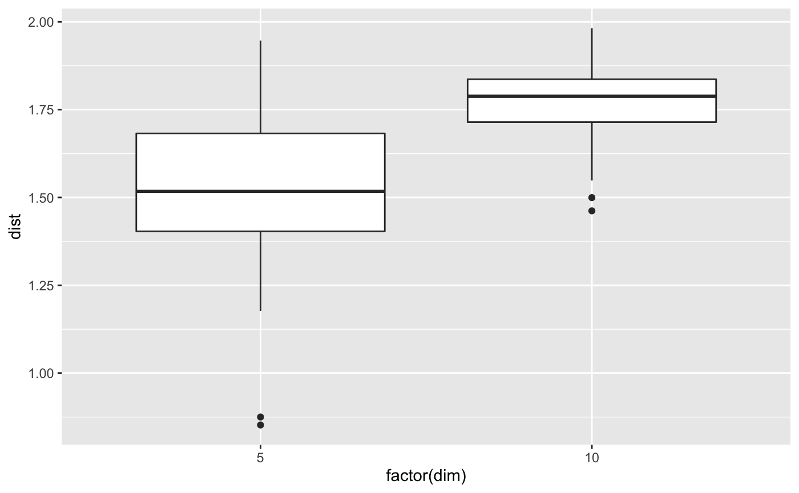

Collecting all pairwise distances between input planes.
distanceDist.RdThe distribution of all pairwise distances is useful to understand the optimisation in a guided tour, to compare e.g. different optimisation methods or different number of noise dimensions.
Examples
planes1 <- purrr::rerun(10, tourr::basis_random(5))
#> Warning: `rerun()` was deprecated in purrr 1.0.0.
#> ℹ Please use `map()` instead.
#> # Previously
#> rerun(10, tourr::basis_random(5))
#>
#> # Now
#> map(1:10, ~ tourr::basis_random(5))
planes2 <- purrr::rerun(10, tourr::basis_random(10))
#> Warning: `rerun()` was deprecated in purrr 1.0.0.
#> ℹ Please use `map()` instead.
#> # Previously
#> rerun(10, tourr::basis_random(10))
#>
#> # Now
#> map(1:10, ~ tourr::basis_random(10))
d1 <- distanceDist(planes1)
d2 <- distanceDist(planes2)
d <- tibble::tibble(dist=c(d1, d2), dim=c(rep(5,length(d1)),rep(10,length(d2))))
ggplot2::ggplot(d) + ggplot2::geom_boxplot(ggplot2::aes(factor(dim), dist))
